用 github pages 建立 Blog!
什么是 github pages?
GitHub Pages 是 GitHub 提供的一个网页寄存服务，于 2008 年推出。可以用于存放静态网页，包括博客、项目文档甚至整本书。Jekyll 软件可以用于将文档转换成静态网页，该软件提供了将网页上传到 GitHub Pages 的功能
─ 维基百科
为什么要使用 github pages?
虽然说 GitHub Pages 是 GitHub 提供的一个网页寄存服务，但 github 使用人数非常多，且使用 GitHub Pages 的话无须重新配置新的域名，使用几个步骤即可搭建好一个静态网站。
若只是用于分享技术的话是个很好的平台，且技术难度低!
之后也能将代码直接放置在 github 仓库中，优化简历与作品。
若平时有试着习惯撰写技术文章的话，对沟通与代码的理解性也能更高。
开始建立 github pages
建立前的准备
建立一个仓库(Repository)
登录github后，点击右上角的 「+」 并选择 「New repository」
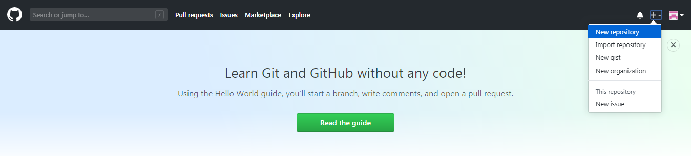
Repository name 中输入 「githubAccount.github.io」，输入完后点击下方的 「Create resposltory」
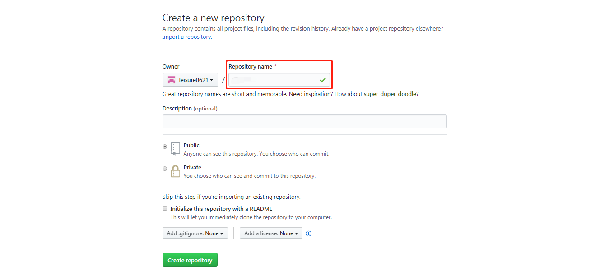
接着就能看见的画面，之后可在「Your profile」中查看刚刚建立的项目。进入项目后上面有你项目的 git 仓库链接，你能够依照上面所教的步骤在你的电脑上部属。或用「git clone 仓库地址」的方式设置（在使用 git 代码前你首先要去下载 git，才能在电脑上使用）
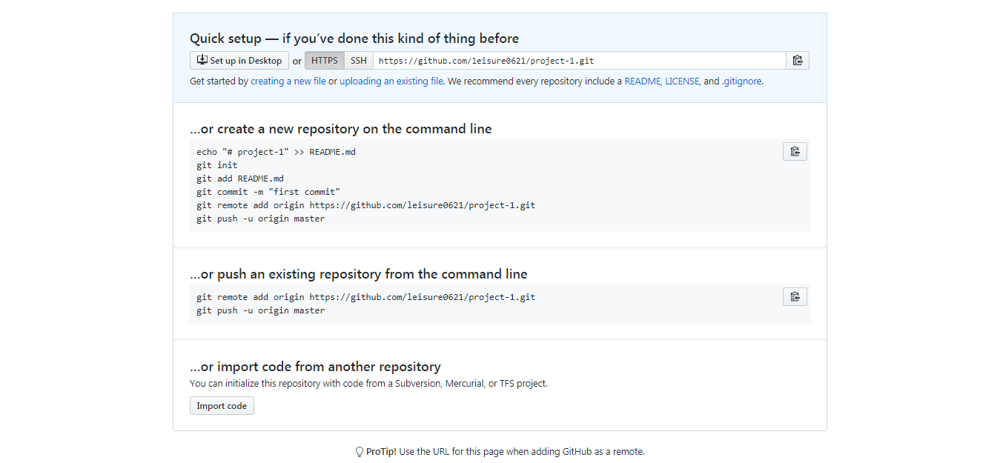
编辑第一个页面
在设置好项目后，进入目录中。并在该目录下新增一页「index.html」(页面内容能自行编辑)。在推送上线后打开链接，就能直接查看该页面。
- 项目位置，依据个人设置的项目位置进入(以下范例为本项目在电脑上配置的目录)。
G:\leisure0621.github.io
- 文件内容，可以依需求自行修改，也可参考以下代码。
<!DOCTYPE html>
<html lang="en">
<head>
<meta charset="UTF-8" />
<meta name="viewport" content="width=device-width, initial-scale=1.0" />
<meta http-equiv="X-UA-Compatible" content="ie=edge" />
<title>Home Page</title>
</head>
<body>
Home Page
</body>
</html>
将页面推送上线
- 添加待推送档案(add 后面加 . 表示所有修改过的档案都要添加)。
git add .
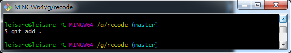
- 添加事件名称(名称必须填写的让人明白此次更新的原因)。
git commit -m 'my first commit'
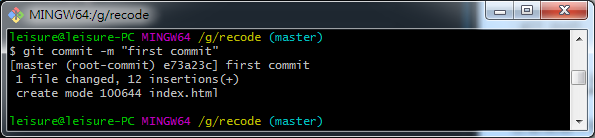
- 推送上线。
git push
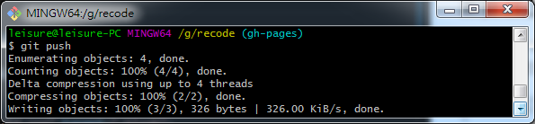
如果需要更细的用法可以至网上搜寻git push等相关的关键字进行查找，而在当前项目中推送的方式只使用 git push 的原因为，此项目仅有一个线上分支。所以可用此方法直接推送。
浏览器上查看
在浏览器中输入「https://githubAccount.github.io」就可看见刚刚编辑好的画面
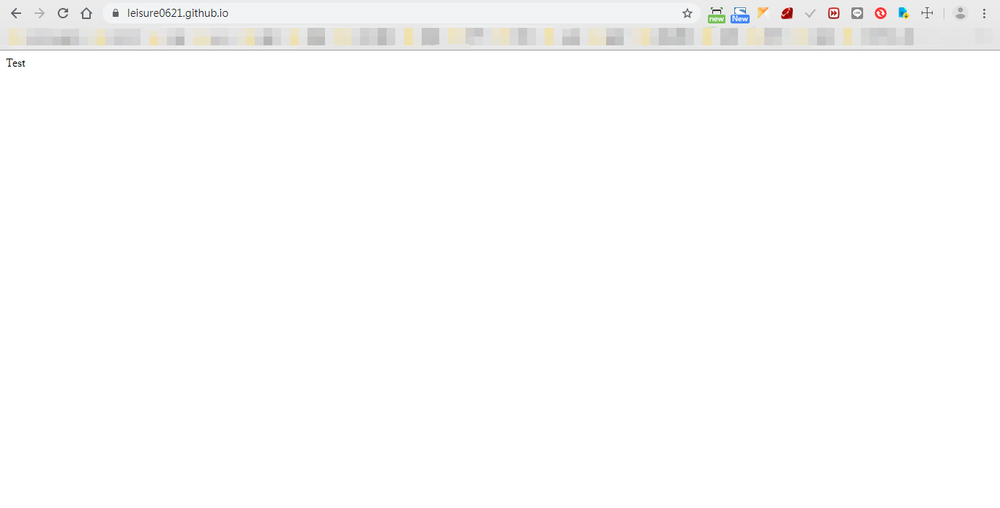
如果只有一个项目的时候，所有的页面都可以写在一个仓库当中。但假设越来越多页面的话，应该将每个独立的项目设置为一个独立的 repository，未来假设有需要更改。或查看 commit 时也会更清晰，不容易混淆。
将每个不关联的项目分开，并将每次 commit 的消息定义的清晰让人一眼可明白此次修改的事件主要有哪些，也是未来该练习的事。
建立其他项目仓库
跟一般建立 Repository的方式相同，但此时已经不需要像刚开始那样输入「githubAccount.github.io」，而是直接输入「项目名称」就能够直接创建。
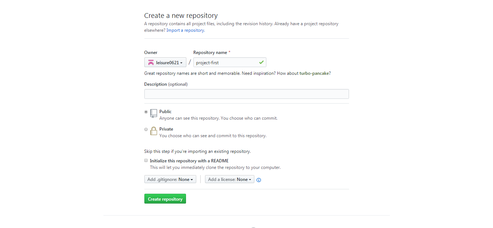
在本地指定目录 clone 项目
git clone 仓库链接
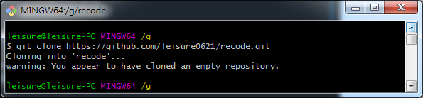
建立好后，若也在此项目中添加完需上线的资料，则记得 push 上线，都做好后则继续执行后续说明的 gh-pages branch 指令。
建立 gh-pages branch
gh-pages branch 主要是为了上面所说的事情，「将不关连的项目拆分」以让每个工程的定义更清晰明确，详细依照下方三步骤执行。
- 建立并进入 gh-pages 分支。
git checkout -b gh-pages

新增 Readme.md >
git add .>git commit -m '第一個推送'(如果 git 創建時就有 readme，可跳過此步驟)将分支推送上线。
git push --set-upstream origin gh-pages
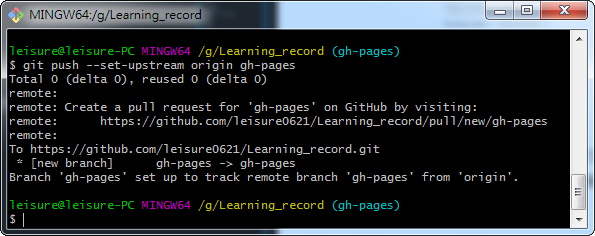
- 将新 commit 推送上线。
git push
在浏览器上查看
此时项目目录为此:
.
|
+---github-pages
| index.html
| index.md
|
\---image
在浏览器上打开 https://githubAccount.github.io/projectFolder/ (依据项目目录，此时需打开的 projectFolder 应是 github-pages，且显示的内容为 index.html 中的资料)。
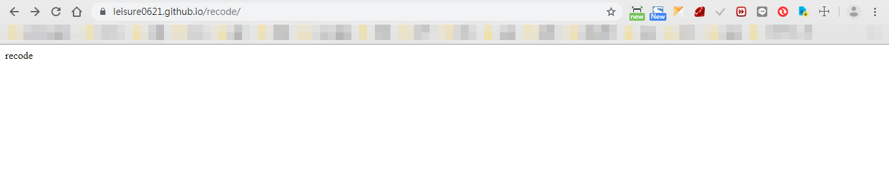
延伸问题
「gh-pages」 跟「githubAccount.github.io」站互相会有什么影响？
在 gh-pages 中如果已经有建立一个项目 A、在主页中也建立一个项目 A 的资料夹的话，会以 gh-pages 的项目 A 为主。即只会显示 gh-pages 的项目资料。
这时就能做到资料拆分的作用，自然的以后也不需要在主页的项目中放多馀的项目文件进去了。